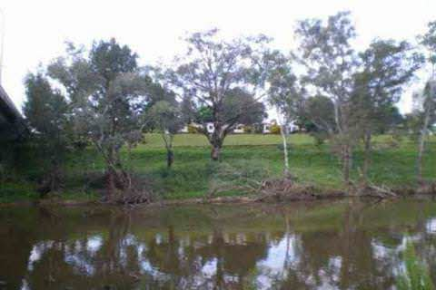
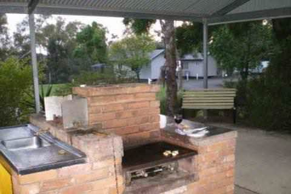

PHONE
PHONE GET DIRECTIONS
GET DIRECTIONS- 
- 
-

COORDINATES: 32º32'32.70"S, 148º56'33.74"E
LOCATION: On the Mitchell Highway, next to the bridge over the Macquarie River on the Dubbo side of Wellington.
COORDINATES: 32º32'32.70"S, 148º56'33.74"E
LOCATION: On the Mitchell Highway, next to the bridge over the Macquarie River on the Dubbo side of Wellington.